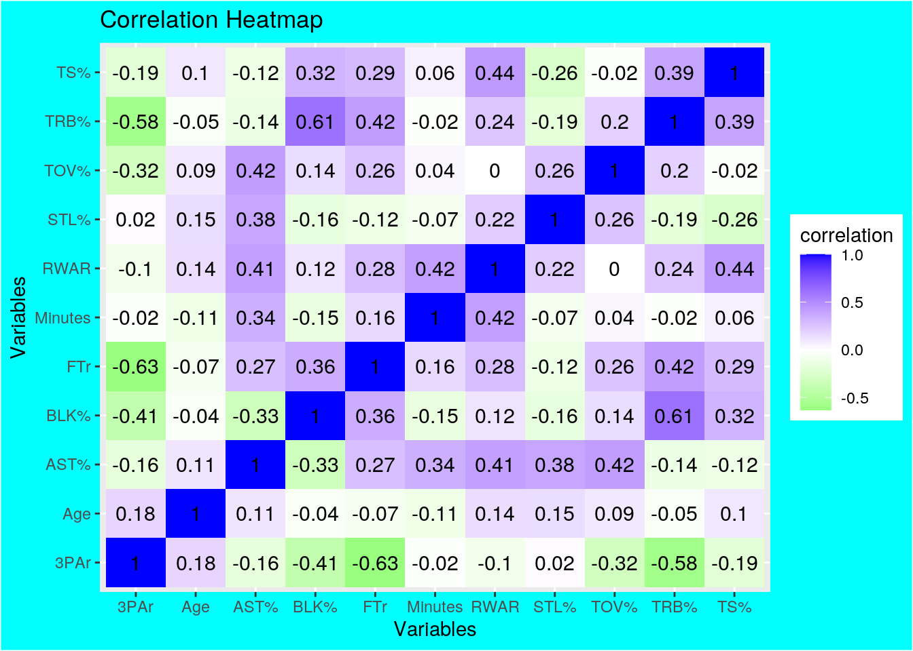
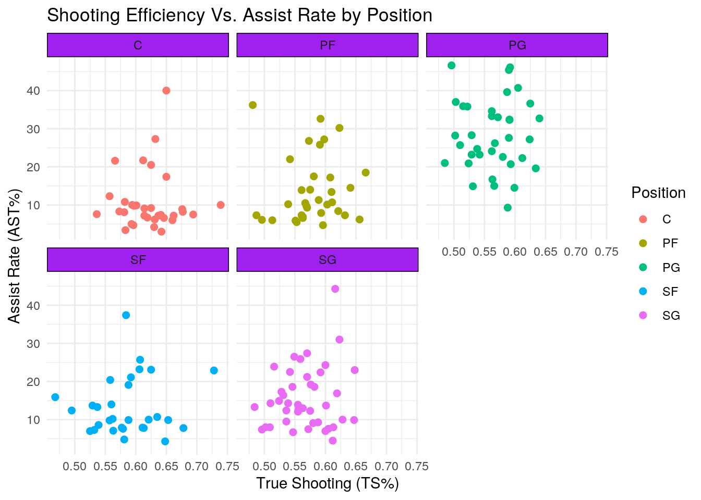
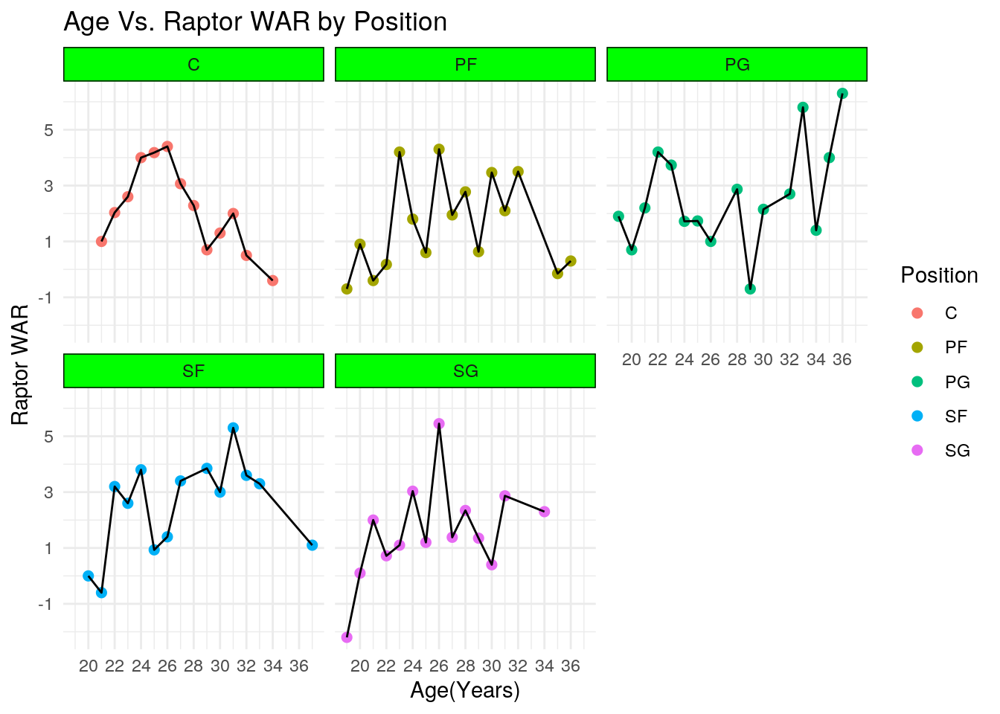
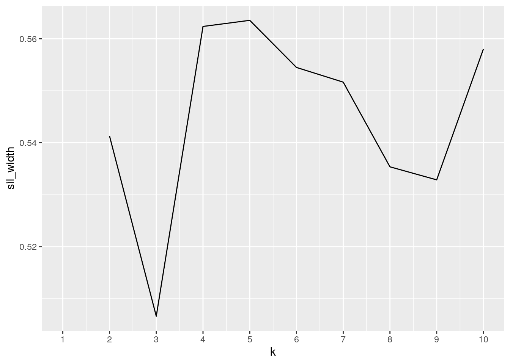
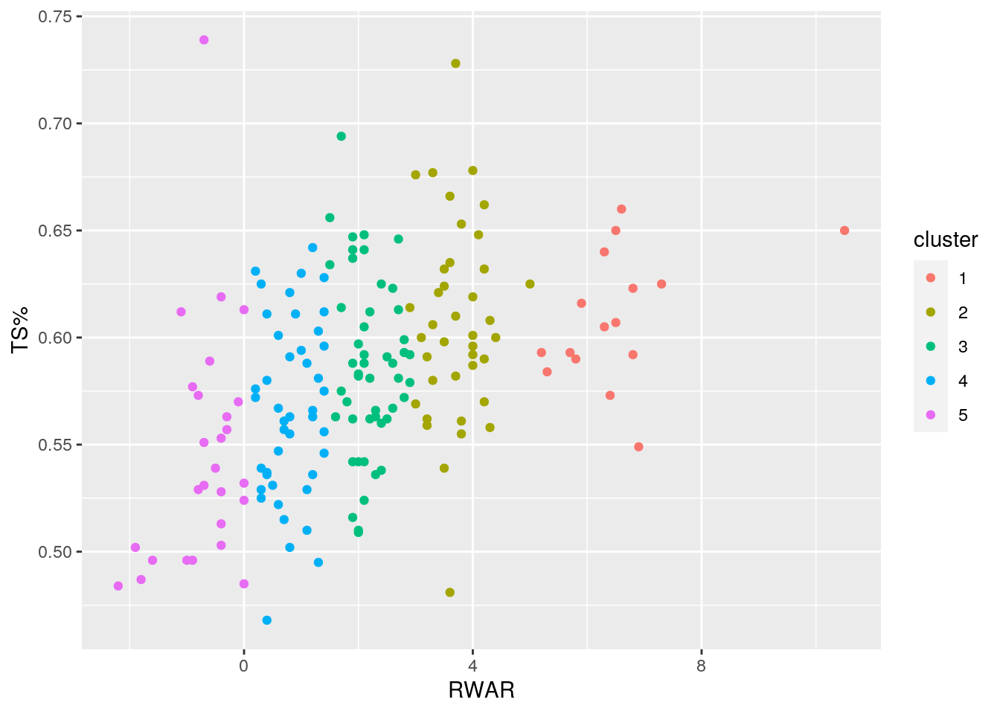
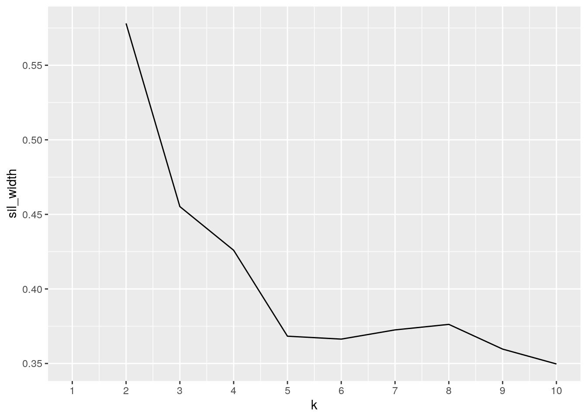
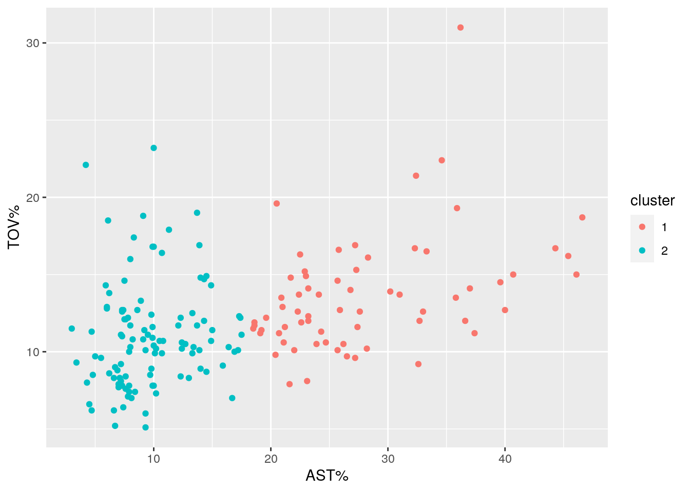
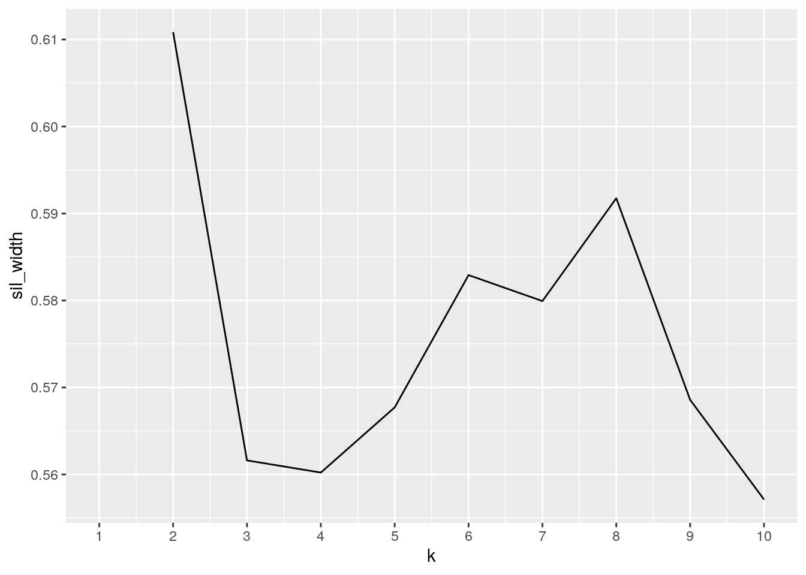
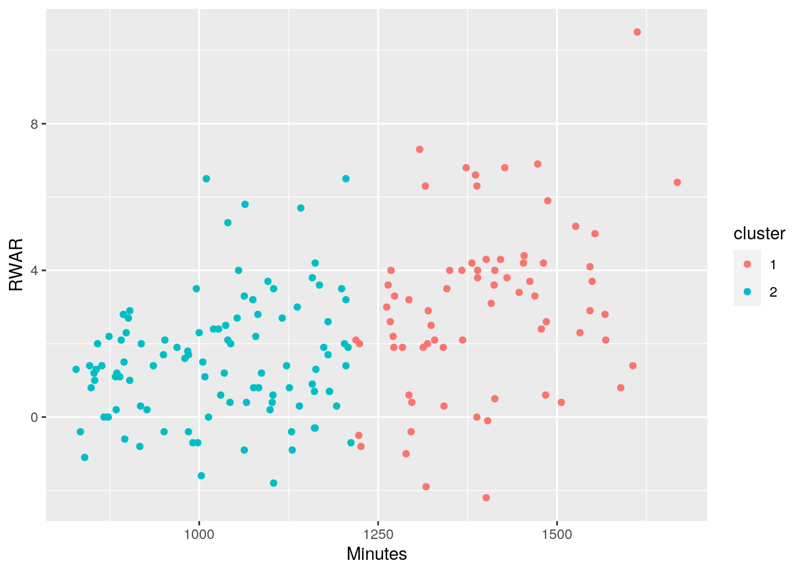

There were two data sets used for this analysis: “Raptor WAR” and “Box” data sets, both of which list various statistics for NBA players. Sports analytics are one of my hobbies, so the prospect of being able to analyze this type of data was very interesting to me. The bulk of this data comes from the “Box” data set, which was scraped from the basketball data website “Basketball Reference”. This data set contains statistics regarding every NBA player who plays significant minutes, and the statistics are versions of traditional statistics, which have been modified to make them more accurate in representing a player’s actual value. The statistics are as follows:
Player Name/Team/Age/Minutes Played: Self-Explanatory
Position: A player can have one of 5 positions on a basketball team (PG, SG, SF, PF, C), and this position largely defines what his role on the court is.
True Shooting (TS%): Points scored per scoring attempt divided by 100
Three Point Attempt Rate (3PAr): Percentage of shots taken from three-point range.
Free Throw Rate (FTr): Average number of free throw attempts per shot taken.
Assist Percentage (AST%): Percentage of assists a player is responsible for while he is on the court.
Total Rebound Percentage (TRB%): Percentage of available rebounds a player grabs while he is on the court.
Steal Percentage (STL%): Percentage of opponent possessions that end with a player stealing the ball while he is on the court.
Block Percentage (BLK%): Percentage of opponent possessions that include a player blocking a shot while he is on the court.
Turnover Percentage (TOV%): Number of turnovers a player commits per 100 possessions.
The second data set is pulled from FiveThirtyEight’s website and only tracks one statistic for players: RAPTOR WAR, abbreviated in this analysis as RWAR. RAPTOR is FiveThirtyEight’s summary metric which attempts to estimate a player’s overall value on the court (how good they are). The units used are WAR (Wins Above Replacement), which is an estimate of how many additional wins a player provides to his team, compared to a replacement (average) player. I chose these two, because I am interested in seeing if any statistics have a particularly high correlation with RAPTOR. Since scoring is the most direct and obvious way a player contributes to his team, and better players will generally play more, I’m expecting TS% and Minutes to have the highest correlation with RWAR of any statistic.
RaptorWAR2 <- read_csv("RaptorWAR2.csv")
PlayerBoxData <- read_csv("PlayerBoxData.csv")
BoxData2 <- PlayerBoxDataBoth data sets were already ready to join, because the two sites structured their data in very similar ways, and they didn’t have any variables in common besides the player name, so there was minimal effort needed to tidy the data before joining. Pivoting was not necessary for this part, but I used it later when creating my correlation matrix. Due to an importing error, the Box data set came with several empty columns, but I removed those before joining.
BoxData2 <- select(BoxData2, -c(14:23))I used an inner join on this data, because the only valuable information in the data would come from players who have both the box and WAR stats listed, so any other player wouldn’t be useful for the analysis. Many more players had WAR stats available than the box score stats, because the basketball reference website only listed 180 players while the WAR site listed 250. They had different barriers for what constituted significant minutes, and this did result in a decent chunk of players getting dropped from the WAR set. However, these players didn’t have enough minutes to make any significant impact on the Box data set, so the negative impact is minimal.
After the join, there were 175 players listed which means some players were dropped from both data sets. While this slightly limits sample size, it is necessary to perform meaningful analysis when looking at the correlation between different box stats/info and WAR. In addition, one player (James Harden) was listed at both the PG and SG positions. Since he is regarded by the basketball community to play the SG position, I changed his position info from “PG-SG” to “SG”. One last note is that I realized, after my first attempt to manipulate this data, that all of the columns had been converted to character data type when I joined the data sets. Because of this, I retroactively converted every data type to numeric except name, position, and team.
playerdata <- inner_join(RaptorWAR2, BoxData2, by = "Player")
playerdata <- playerdata %>% mutate_all(~gsub("PG-SG", "SG",
.))
playerdata$RWAR <- as.numeric(as.character(playerdata$RWAR))
playerdata$Age <- as.numeric(as.character(playerdata$Age))
playerdata$Minutes <- as.numeric(as.character(playerdata$Minutes))
playerdata$`TS%` <- as.numeric(as.character(playerdata$`TS%`))
playerdata$`3PAr` <- as.numeric(as.character(playerdata$`3PAr`))
playerdata$FTr <- as.numeric(as.character(playerdata$FTr))
playerdata$`TRB%` <- as.numeric(as.character(playerdata$`TRB%`))
playerdata$`AST%` <- as.numeric(as.character(playerdata$`AST%`))
playerdata$`STL%` <- as.numeric(as.character(playerdata$`STL%`))
playerdata$`BLK%` <- as.numeric(as.character(playerdata$`BLK%`))
playerdata$`TOV%` <- as.numeric(as.character(playerdata$`TOV%`))
glimpse(playerdata)## Rows: 175
## Columns: 14
## $ Player <chr> "Nikola Jokic", "Joel Embiid", "Kawhi Leonard", "Mike Conley…
## $ RWAR <dbl> 10.5, 6.5, 7.3, 5.8, 6.5, 5.3, 5.7, 6.8, 6.8, 6.6, 6.9, 6.3,…
## $ Position <chr> "C", "C", "SF", "PG", "SF", "SF", "C", "PG", "PF", "C", "SG"…
## $ Age <dbl> 25, 26, 29, 33, 30, 31, 26, 21, 26, 28, 26, 32, 36, 31, 25, …
## $ Team <chr> "DEN", "PHI", "LAC", "UTA", "LAC", "MIA", "ATL", "DAL", "MIL…
## $ Minutes <dbl> 1612, 1010, 1308, 1064, 1205, 1040, 1142, 1373, 1427, 1386, …
## $ `TS%` <dbl> 0.650, 0.650, 0.625, 0.590, 0.607, 0.584, 0.593, 0.592, 0.62…
## $ `3PAr` <dbl> 0.194, 0.161, 0.276, 0.523, 0.445, 0.131, 0.000, 0.381, 0.20…
## $ FTr <dbl> 0.257, 0.634, 0.332, 0.212, 0.224, 0.538, 0.303, 0.350, 0.53…
## $ `TRB%` <dbl> 17.7, 19.3, 10.2, 6.3, 10.5, 13.0, 26.6, 12.9, 17.8, 22.8, 6…
## $ `AST%` <dbl> 40.0, 17.4, 23.1, 27.6, 25.7, 37.4, 5.0, 46.1, 30.2, 6.0, 26…
## $ `STL%` <dbl> 2.2, 1.7, 2.6, 2.2, 1.7, 2.9, 1.3, 1.4, 1.7, 0.7, 2.3, 1.9, …
## $ `BLK%` <dbl> 1.7, 3.7, 1.2, 0.4, 1.2, 1.1, 6.6, 1.7, 3.3, 7.5, 2.0, 0.2, …
## $ `TOV%` <dbl> 12.7, 12.2, 8.1, 12.6, 14.6, 11.2, 9.7, 15.0, 13.9, 12.8, 9.…sapply(playerdata, class)## Player RWAR Position Age Team Minutes
## "character" "numeric" "character" "numeric" "character" "numeric"
## TS% 3PAr FTr TRB% AST% STL%
## "numeric" "numeric" "numeric" "numeric" "numeric" "numeric"
## BLK% TOV%
## "numeric" "numeric"For every variable in the data set, I attempted to narrow down what aspect of the variable would be the most relevant to a player’s value on the court, and selected a dplyr function based on that. I then went through each variable and piped it into the appropriate function, before piping it into a theme from the “Kable” package to make the table easier to read. I found many variables were very conveniently able to be grouped by team and position, which was helpful because it allowed comparisons across more levels than just individual players. I mutated the free throw rate variable to be a rate relative to league average (RelativeFTr), rather than only the absolute rate, because using relative statistics is vital to be able to extend the analysis across multiple eras where trends may differ.
There were a few interesting results that were obtained from the wrangling. Firstly, I found that the most efficient scoring team in the NBA is the Brooklyn Nets. This confirmed a general belief the NBA community already had, because the Nets have three of the most talented offensive players in the league. I found that the Dallas Mavericks (the team I root for), have the highest three-point attempt rate in the league, which is again unsurprising, since their game plan revolves around one player drawing defensive attention and leaving three point shooters open. Next, I found that the San Antonio Spurs have the lowest standard deviation of minutes played of any team in the league. As one of the few teams in the NBA without a true star, they have no motivation to play a specific player more than any other, resulting in arguably the most balanced attack in the NBA. Finally, using my relative free throw rate metric, I found that Rudy Gobert has a free throw rate 168.5% higher than league average. This is a very dramatic outlier, and it is likely because Gobert is a very good scorer close to the basket, but a bad free throw shooter, so teams will foul him and risk the free throws rather than letting him score.
playerdata %>% group_by(Team) %>% summarize(mean_ts = mean(`TS%`)) %>%
arrange(desc(mean_ts)) %>% head() %>% kbl() %>% kable_material(c("striped",
"hover", "condensed"))| Team | mean_ts |
|---|---|
| BRK | 0.6496000 |
| UTA | 0.6206667 |
| LAC | 0.6068571 |
| PHO | 0.6058333 |
| DEN | 0.5990000 |
| SAC | 0.5966667 |
playerdata %>% summarize(mean_ts = mean(`TS%`)) %>% kbl() %>%
kable_material(c("striped", "hover", "condensed"))| mean_ts |
|---|
| 0.5821143 |
playerdata %>% group_by(Position) %>% summarize(sd_trb = sd(`TRB%`)) %>%
arrange(desc(sd_trb)) %>% kbl() %>% kable_material(c("striped",
"hover", "condensed"))| Position | sd_trb |
|---|---|
| C | 4.175458 |
| PF | 2.965716 |
| PG | 2.834381 |
| SF | 2.414537 |
| SG | 1.927459 |
playerdata %>% summarize(sd_trb = sd(`TRB%`)) %>% kbl() %>% kable_material(c("striped",
"hover", "condensed"))| sd_trb |
|---|
| 4.453127 |
playerdata %>% summarize(quantile(`AST%`)) %>% kbl() %>% kable_material(c("striped",
"hover", "condensed"))
quantile(AST%)
|
|---|
| 3.00 |
| 8.00 |
| 13.40 |
| 23.05 |
| 46.60 |
playerdata %>% filter(RWAR == max(RWAR)) %>% select(Player, RWAR) %>%
kbl() %>% kable_material(c("striped", "hover", "condensed"))| Player | RWAR |
|---|---|
| Nikola Jokic | 10.5 |
playerdata %>% summarize(max(Age), min(Age), median(Age)) %>%
kbl() %>% kable_material(c("striped", "hover", "condensed"))| max(Age) | min(Age) | median(Age) |
|---|---|---|
| 37 | 19 | 26 |
playerdata %>% mutate(relativeFTr = (FTr/mean(FTr) - 1)) %>%
filter(relativeFTr == max(relativeFTr)) %>% select(Player,
relativeFTr) %>% kbl() %>% kable_material(c("striped", "hover",
"condensed"))| Player | relativeFTr |
|---|---|
| Rudy Gobert | 1.685134 |
playerdata %>% group_by(Position) %>% summarize(mean_stl = mean(`STL%`)) %>%
arrange(desc(mean_stl)) %>% kbl() %>% kable_material(c("striped",
"hover", "condensed"))| Position | mean_stl |
|---|---|
| PG | 1.805556 |
| SF | 1.573333 |
| SG | 1.514286 |
| PF | 1.497059 |
| C | 1.224242 |
playerdata %>% summarize(mean_stl = mean(`STL%`)) %>% kbl() %>%
kable_material(c("striped", "hover", "condensed"))| mean_stl |
|---|
| 1.526286 |
playerdata %>% group_by(Team) %>% summarize(sd_min = sd(Minutes)) %>%
arrange(sd_min) %>% head() %>% kbl() %>% kable_material(c("striped",
"hover", "condensed"))| Team | sd_min |
|---|---|
| SAS | 106.7858 |
| LAL | 118.4048 |
| MEM | 123.1855 |
| ORL | 127.0708 |
| NOP | 138.0763 |
| OKC | 151.7455 |
playerdata %>% summarize(sd_min = sd(Minutes)) %>% kbl() %>%
kable_material(c("striped", "hover", "condensed"))| sd_min |
|---|
| 213.6757 |
playerdata %>% group_by(Position, Team) %>% summarize(mean_three = mean(`3PAr`)) %>%
arrange(desc(mean_three)) %>% head() %>% kbl() %>% kable_material(c("striped",
"hover", "condensed"))| Position | Team | mean_three |
|---|---|---|
| SF | PHI | 0.779 |
| SG | GSW | 0.735 |
| SG | IND | 0.732 |
| SG | SAC | 0.730 |
| SF | UTA | 0.719 |
| PF | PHO | 0.710 |
playerdata %>% summarize(mean_three = mean(`3PAr`)) %>% kbl() %>%
kable_material(c("striped", "hover", "condensed"))| mean_three |
|---|
| 0.38356 |
playerdata %>% group_by(Position) %>% summarize(mean_blk = mean(`BLK%`)) %>%
arrange(mean_blk) %>% kbl() %>% kable_material(c("striped",
"hover", "condensed"))| Position | mean_blk |
|---|---|
| PG | 0.8611111 |
| SG | 0.9642857 |
| SF | 1.5100000 |
| PF | 1.8882353 |
| C | 4.2272727 |
playerdata %>% summarize(mean_blk = mean(`BLK%`)) %>% kbl() %>%
kable_material(c("striped", "hover", "condensed"))| mean_blk |
|---|
| 1.831429 |
This heatmap shows the correlations between every pair of numeric variables in the data set. The strongest correlation in the positive direction is TRB% and BLK%. This is likely because both rebounding and blocking duties are usually handled by the same group of players (whoever the tallest players on the court are). The strongest correlation in the negative direction is FTr and 3PAr. This is because, since being fouled behind the three point line gives three free throws instead of two, defenses play much safer at that distance, and players who are primarily three point shooters are much less likely to get fouled. TOV% and RWAR had a correlation of 0, likely because a high TOV% can come from a player who is careless with the ball (low RWAR) or a player who is trusted with the most passing responsibility and therefore has most of the turnovers (high RWAR). Finally, my prediction from the introduction that RWAR would be most strongly correlated with TS% and Minutes for the reasons I mentioned was supported by this heatmap.
corMatrix <- playerdata %>% select_if(is.numeric) %>% cor(use = "pair")
tidycor <- corMatrix %>% as.data.frame %>% rownames_to_column("var1") %>%
pivot_longer(-1, names_to = "var2", values_to = "correlation")
tidycor %>% ggplot(aes(var1, var2, fill = correlation)) + geom_tile() +
geom_text(aes(label = round(correlation, 2)), color = "black",
size = 4) + xlab("Variables") + ylab("Variables") + ggtitle("Correlation Heatmap") +
scale_fill_gradient2(low = "green", mid = "white", high = "blue") +
theme(plot.background = element_rect(fill = "cyan"))
This plot displayed the relationships between shooting and assist rates for different positions. The most useful comparison to make for this analysis is between the C and PG positions, because they are on opposite ends of the spectrum in terms of their roles on an offense, and their distributions have the greatest difference of any of the five. PGs are the players in control of the offense. They take the ball down the court and decide what play to run, and will frequently make the first pass of the possession which is often the only pass before a shot, this is why their assist rates are so high. While they also shoot the ball frequently, the shots they take are often difficult shots when they can’t find an open player, so their scoring looks less efficient. Meanwhile, Cs are almost always the last person to receive the ball on offense whenever they do receive it. The idea, usually, is that they will catch the ball very close to the basket and either lay it up or dunk it. Because they rarely make a pass after getting the ball, their assist rates are very low. However, their scoring efficiency tends to be higher than PGs, because they take shots that are much closer to the basket and therefore are usually easier to make.
playerdata %>% ggplot(aes(`TS%`, `AST%`)) + geom_point(size = 2,
aes(color = Position)) + facet_wrap(~Position) + xlab("True Shooting (TS%)") +
ylab("Assist Rate (AST%)") + ggtitle("Shooting Efficiency Vs. Assist Rate by Position") +
theme_minimal() + theme(strip.background = element_rect(colour = "black",
fill = "purple"))
This plot shows how the average value of players at different positions changes as they age. Most of these plots tend to be rough approximations of parabolas with peaks at around 25-28 years. This is when a player has been in the league for a few years and they are considered to be at their physical primes, so this is usually when their value is highest. Positions which rely the most on pure physical ability (Cs) tend to have the most obvious peak at this range and subsequent decline. However, other positions such as SG rely more on shooting the ball, which is a skill that doesn’t deteriorate with age. This is why the RWAR for SGs can stay very high as they age. Finally, the one exception to this rough parabola rule is PGs. As mentioned above, PGs are trusted with running the offense and being the main passers on the team. Not only does this not rely much on physical ability, it relies mainly on basketball IQ and decision making, which only improves with age. Therefore, PGs who are good enough to get significant minutes at older ages tend to be very good at decision making and then maximize their RWAR value because of it.
playerdata %>% ggplot(aes(x = Age, y = RWAR)) + geom_point(size = 2,
aes(color = Position), stat = "summary", fun = mean) + geom_line(aes(y = RWAR),
stat = "summary", fun = mean) + facet_wrap(~Position) + scale_y_continuous(breaks = seq(-3,
11, 2)) + scale_x_continuous(breaks = seq(18, 36, 2)) + xlab("Age(Years)") +
ylab("Raptor WAR") + ggtitle("Age Vs. Raptor WAR by Position") +
theme_minimal() + theme(strip.background = element_rect(colour = "black",
fill = "green"))
For my first PAM clustering, I decided to compare RWAR and TS%. RWAR is the overall summary statistic included in this dataset, and TS% is the variable it is most strongly correlated with. The maximum silhouette width occurred with 5 clusters, and this width was 0.564, indicating a reasonably strong structure. The relationship between the clusters was generally trending in the positive direction, as expected. However, there were two instances which violated the positive trend when comparing players representative of the medoids of the clusters.
Firstly, Isaiah Roby’s cluster (lowest RWAR), actually had a higher medoid TS% than the next two clusters over. This is because of the outlier of Deandre Jordan. He has the highest TS% of anyone in the league, but he isn’t very good at anything else. This results in him having a negative RWAR despite the highest TS% in the league, significantly increasing the medoid TS%. The other instance is that Paul George’s cluster (highest RWAR) actually has a slightly lower medoid TS% than the cluster that precedes it. Even the mean TS% for that cluster is barely higher than the one that precedes it. This is because, at that level of RWAR, players are responsible for a lot of both scoring and passing, and with higher a volume of shots players can’t be as selective about waiting for ideal wide open shots. Players at this level have to take difficult shots that they may not be able to make, dropping their TS% despite them likely being among the best scorers in the league. The other reason for this is the outlier of Nikola Jokic. He has far and away the largest RWAR, but, due to him being an extreme example of the problem mentioned previously, he has only an average TS% among his cluster, dropping the medoid TS% down.
library(cluster)
pam_dat <- playerdata %>% select(RWAR, `TS%`)
sil_width <- vector()
for (i in 2:10) {
pam_fit <- pam(pam_dat, k = i)
sil_width[i] <- pam_fit$silinfo$avg.width
}
ggplot() + geom_line(aes(x = 1:10, y = sil_width)) + scale_x_continuous(name = "k",
breaks = 1:10)
library(cluster)
pam1 <- playerdata %>% select(RWAR, `TS%`) %>% pam(k = 5)
pamclust <- playerdata %>% mutate(cluster = as.factor(pam1$clustering))
pamclust %>% ggplot(aes(RWAR, `TS%`, color = cluster)) + geom_point()
pamclust %>% group_by(cluster) %>% select(cluster, RWAR, `TS%`) %>%
summarize_if(is.numeric, mean, na.rm = T) %>% kbl() %>% kable_material(c("striped",
"hover", "condensed"))| cluster | RWAR | TS% |
|---|---|---|
| 1 | 6.5500000 | 0.6093750 |
| 2 | 3.7205128 | 0.6073077 |
| 3 | 2.1897959 | 0.5867551 |
| 4 | 0.8204545 | 0.5664318 |
| 5 | -0.7000000 | 0.5467037 |
playerdata %>% slice(pam1$id.med) %>% select(Player, RWAR, `TS%`) %>%
kbl() %>% kable_material(c("striped", "hover", "condensed"))| Player | RWAR | TS% |
|---|---|---|
| Paul George | 6.5 | 0.607 |
| Harrison Barnes | 3.7 | 0.610 |
| Gordon Hayward | 2.1 | 0.588 |
| Reggie Bullock | 0.8 | 0.563 |
| Isaiah Roby | -0.6 | 0.589 |
pam1$silinfo$avg.width %>% kbl() %>% kable_material(c("striped",
"hover", "condensed"))| x |
|---|
| 0.5635349 |
For my second PAM clustering, I decided to compare AST% and TOV%. These two metrics are often paired together in basketball analyses, to serve as an estimate for how good someone is at passing. The theory is that most turnovers result from stolen passes, which will often occur when a pass is poorly timed or aimed. They are often compared as a ratio to account for players who pass a lot and will have very high numbers for both statistics. The data divided surprisingly neatly into the two clusters. This is because, in the current NBA, most passing attacks will have certain players be responsible for most of the passing, rather than equally dividing it. This is why there are the fewest data points around the 15-20% range, since 20% is 1/5th of 100% and there are 5 players per team on the court. Because a larger share of passing is done by a select group of players, there are many more data points in the lower AST% cluster than the higher one. As expected, ignoring the outlier players who are either amazing or terrible passers, AST% and TOV% tend to increase together.
pam_dat <- playerdata %>% select(`AST%`, `TOV%`)
sil_width <- vector()
for (i in 2:10) {
pam_fit <- pam(pam_dat, k = i)
sil_width[i] <- pam_fit$silinfo$avg.width
}
ggplot() + geom_line(aes(x = 1:10, y = sil_width)) + scale_x_continuous(name = "k",
breaks = 1:10)
library(cluster)
pam1 <- playerdata %>% select(`AST%`, `TOV%`) %>% pam(k = 2)
pamclust <- playerdata %>% mutate(cluster = as.factor(pam1$clustering))
pamclust %>% ggplot(aes(`AST%`, `TOV%`, color = cluster)) + geom_point()
pamclust %>% group_by(cluster) %>% select(cluster, `AST%`, `TOV%`) %>%
summarize_if(is.numeric, mean, na.rm = T) %>% kbl() %>% kable_material(c("striped",
"hover", "condensed"))| cluster | AST% | TOV% |
|---|---|---|
| 1 | 27.872727 | 13.60455 |
| 2 | 9.711927 | 10.99817 |
playerdata %>% slice(pam1$id.med) %>% select(Player, `AST%`,
`TOV%`) %>% kbl() %>% kable_material(c("striped", "hover",
"condensed"))| Player | AST% | TOV% |
|---|---|---|
| Delon Wright | 25.9 | 12.7 |
| Sterling Brown | 9.1 | 10.8 |
pam1$silinfo$avg.width %>% kbl() %>% kable_material(c("striped",
"hover", "condensed"))| x |
|---|
| 0.5780544 |
For my final PAM clustering, I decided to compare RWAR and Minutes. Minutes was the other variable besides TS% which was most highly correlated with RWAR, and I was interested to see how accurately teams rewarded positive contributions on the court with more playing time. Like before, although less cleanly, the data fell into two clusters at the maximum silhouette with. The average silhouette with for two clusters was 0.611, indicating a reasonably strong structure. Again as expected, higher minutes generally correlated to higher RWAR since better players tend to get more playing time, but the main thing to notice about the two clusters is that the higher minutes cluster is much more spread out than the lower minutes cluster. This makes sense considering that more time on the court equals more time to either help or hurt your team, but it is interesting to note that the higher minutes cluster contains not only the highest but the lowest data points for RWAR out of the entire data set.
The biggest outlier in this regard is Anthony Edwards, a rookie SG for the Minnesota Timberwolves, who was the first overall pick in the NBA draft last year. He has a league-worst RWAR of -2.2 while having been given over 1400 minutes of playing time. The reasons for this are fairly nuanced and can’t be captured by data very effectively. The Timberwolves are the worst team in the league, and are effectively out of the playoff race for this season, so have shifted their attention to developing young talent including Edwards, who they hope can become a future star for them. Because of a lack of talented veterans who can help him grow off the court, and because they can safely deprioritize winning now that they’re out of the race, Minnesota has decided to help Edwards develop by maximizing his on court playing time. This data set only captures the league at a single moment in time, so it can’t possibly show this, but the league consensus is that Edwards has actually made dramatic improvements over the course of the season, putting him squarely in contention for the Rookie of the Year award, despite having the lowest RWAR in the league, demonstrating the importance of keeping context in mind when looking at any set of statistics.
pam_dat <- playerdata %>% select(Minutes, RWAR)
sil_width <- vector()
for (i in 2:10) {
pam_fit <- pam(pam_dat, k = i)
sil_width[i] <- pam_fit$silinfo$avg.width
}
ggplot() + geom_line(aes(x = 1:10, y = sil_width)) + scale_x_continuous(name = "k",
breaks = 1:10)
library(cluster)
pam1 <- playerdata %>% select(Minutes, RWAR) %>% pam(k = 2)
pamclust <- playerdata %>% mutate(cluster = as.factor(pam1$clustering))
pamclust %>% ggplot(aes(Minutes, RWAR, color = cluster)) + geom_point()
pamclust %>% group_by(cluster) %>% select(cluster, Minutes, RWAR) %>%
summarize_if(is.numeric, mean, na.rm = T) %>% kbl() %>% kable_material(c("striped",
"hover", "condensed"))| cluster | Minutes | RWAR |
|---|---|---|
| 1 | 1396.458 | 3.000000 |
| 2 | 1027.650 | 1.537864 |
playerdata %>% slice(pam1$id.med) %>% select(Player, Minutes,
RWAR) %>% kbl() %>% kable_material(c("striped", "hover",
"condensed"))| Player | Minutes | RWAR |
|---|---|---|
| Robert Covington | 1389 | 3.8 |
| T.J. McConnell | 1037 | 2.5 |
pam1$silinfo$avg.width %>% kbl() %>% kable_material(c("striped",
"hover", "condensed"))| x |
|---|
| 0.6108484 |